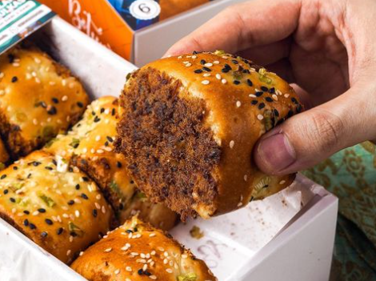
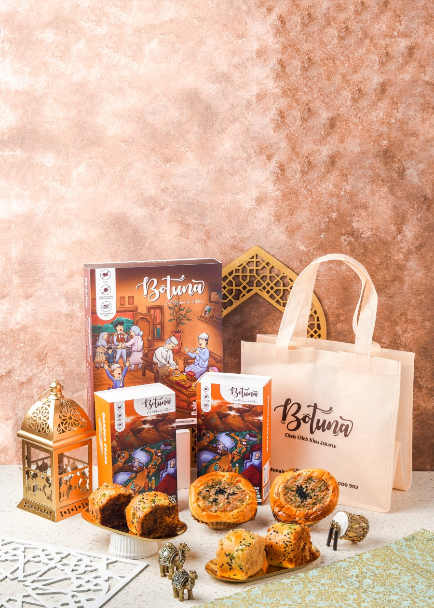
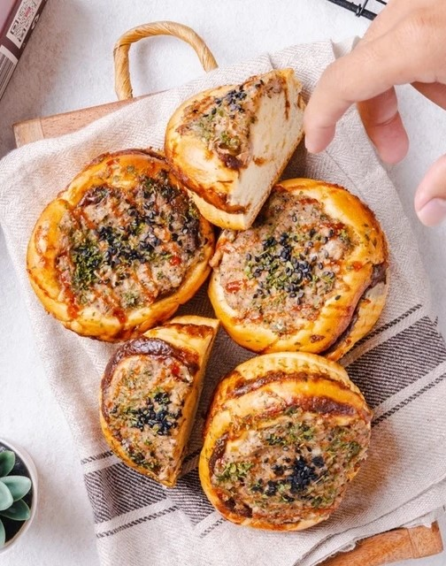
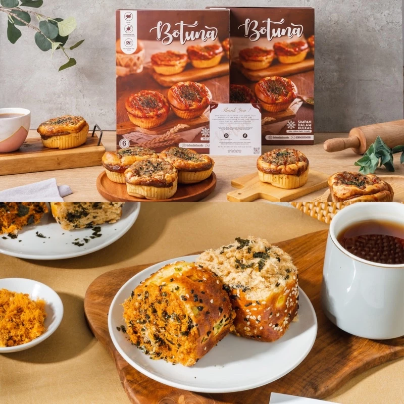
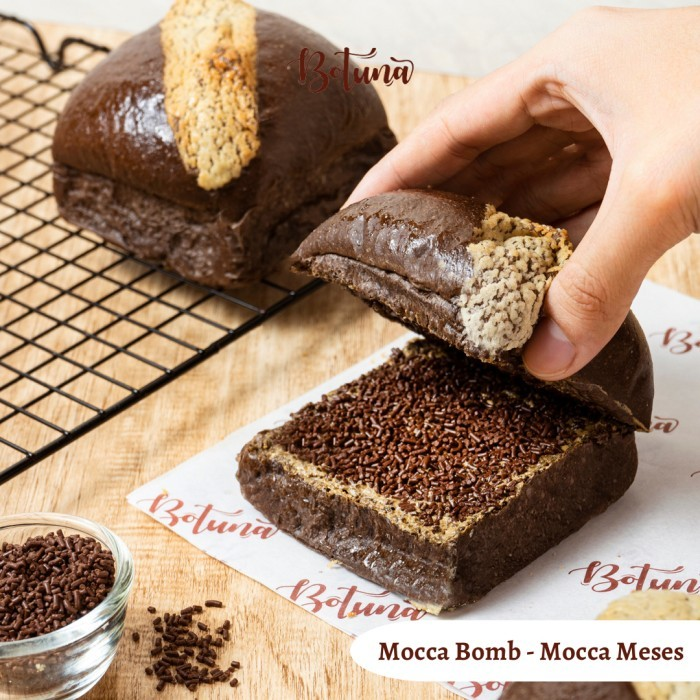

BOTUNA BAKEHOUSE
Botuna Bakehouse hadir dengan menawarkan pilihan oleh-oleh baru untuk banyak orang yang sedang mencari oleh-oleh Jakarta, di tengah ramainya persaingan jajanan populer di Jakarta. Pada laman Instagram @botunabakehouse, juga ditekankan kalimat ‘Oleh Oleh Jakarta’ yang menegaskan visi, misi, dan langkah strategi bisnis yang baik dari Botuna Bakehouse untuk menjadi pilihan pelancong atau warga yang ingin mendapatkan oleh-oleh Jakarta. Nampaknya, strategi tersebut berhasil dengan melihat banyaknya tanggapan positif dan penilaian di dunia maya. Banyak pula warganet yang membuat post tentang kelezatan roti abon yang ada di sini. Awalnya, Botuna Bakehouse merupakan usaha rumahan yang ditawarkan online yang telah berdiri sejak 2020. Namun, karena semakin disukai banyak orang, Joshua, selaku pemilik akhirnya memutuskan untuk membuka bakery mungil di depan rumahnya. Selain membeli oleh-oleh roti abon, pelanggan juga bisa mengintip proses pembuatannya sebab area belakang kasirnya langsung menghadap ke arah dapur produksi. Jika tidak memiliki waktu untuk membeli langsung ke gerainya, Botuna Bakehouse dapat dipesan melalui kontak WhatsApp atau e-commerce, seperti Shopee atau Tokopedia yang telah buka sejak May 2021. Produk roti abon di sini memang disiapkan untuk dijadikan oleh-oleh. Salah satu tandanya, yaitu packaging yang sangat proper. Kemasan yang digunakan selain menarik mata, kuat, dan mampu menjaga produk roti tetap aman walau dibawa bepergian. Kenikmatan sebuah roti seringkali berasal dari nilai yang mendalam serta warisan turun temurun yang sudah terbukti kelezatannya dari generasi ke generasi. Ini pula yang terjadi untuk resep Botuna Bakehouse. Resep botuna dan varian roti abon lain yang ada di bakery ini merupakan warisan dari ibu pemilik. Berawal dari hobi sang ibu yang suka membuat aneka kue dan roti, Joshua mengembangkannya dengan resep special tersebut. Botuna Bakehouse berasal singkatan dari salah satu varian rotinya, yaitu Abon Tuna yang disingkat menjadi Botuna. Belakangan, nama Botuna kembali naik daun sebab banyak orang, khususnya influencer makanan yang meramaikan dengan me-review botuna kemudian mereka upload pada laman Instagram, TikTok, dan Youtube mereka sehingga semakin banyak pembeli baru yang penasaran akan rasa dari Roti Abon Tuna ini.
Our Menu
Roti dengan varian abon tuna ini memiliki cita rasa yang gurih tanpa aroma amis. Selain abon tuna, terdapat campuran mayonais yang agak manis, saus sambal di atasnya, peterseli kering, dan biji wijen hitam. Mayonaisnya tidak berlebihan sehingga membuat abon tetap lembab. Setiap gigitan memberikan sensasi pedas dan hangat dari lada hitam. Selain menu andalan mereka, Botuna Bakehouse juga menawarkan varian golden floss yang terdiri dari topping abon sapi dan ayam. Untuk roti Golden Floss rasa sapi, toppingnya cukup memuaskan selera. Karena isinya termasuk banyak, ditambah dengan tekstur roti yang empuk. Roti tersebut terbagi menjadi 2 rasa tiap variannya, yaitu pedas dan tidak pedas. Ketika membeli roti, pembeli dapat memilih ingin roti varian apa saja, boleh tidak pedas saja, pedas saja, dan boleh di mix antara varian pedas dan tidak pedas. Botuna Bakehouse juga menyediakan roti dengan varian manis yang membuat pembelinya merasa ketagihan.
Untuk pemesanan online, pembeli dapat membeli atau menambahkan pilihan seperti goodiebag Botuna Indonesia, tambahan packing kardus dan bubble warp sebagai antisipasi kerusakaan saat pembelian, serta tambahan gift card yang cocok digunakan sebagai hadiah untuk sanak saudara. Pilihan tersebut dapat dibeli mulai dari Rp1.000.- hingga Rp8.000.-. Berbeda dengan pengiriman biasanya, Botuna menerapkan sistem jika terdapat pesanan pada jam 10.00-22.00 WIB akan dikirim esok hari di jam 11.30 WIB. Sedangkan jika pesanan masuk pada jam 22.00-09.50 WIB akan dikirim di hari yang sama, yakni antara jam 15.00-16.00 WIB.
Botuna Bakehouse yang berada di daerah Jakarta Pusat ini dapat dikunjungi dari:
| Senin-Sabtu |
08.30-17.00 WIB |
| Minggu |
Tutup |
Best Seller :
- Roti varian Abon Tuna
- Roti Beef Golden Floss
- Roti Chicken Golden Floss
List Menu
| No. |
Gambar Produk |
Nama Produk |
Harga |
Link |
| 1. |
 |
Roti varian Abon Tuna |
Rp 90.000,- |
link |
| 2. |
 |
Roti Beef Golden Floss |
Rp 84.000,- |
link |
| 3. |
 |
Roti Chicken Golden Floss |
Rp 80.000,- |
link |
| 4. |
 |
Roti Nori Golden Floss |
Rp 84.000,- |
link |
| 5. |
 |
Bundling Roti Abon Tuna & Golden Floss Chicken Mix Original n Spicy |
Rp 166.200,- |
link |
| 6. |
 |
Roti Susu Cranberry - Milky Cranberry |
Rp 12.500,- |
link |
| 7. |
 |
Roti Mocca Meses - Mocca Bomb |
Rp 12.000,- |
link |
Visit us at :
Jl. Kartini Raya No.5, RT.13/RW.5, Ps. Baru, Kecamatan Sawah Besar, Kota Jakarta Pusat, Daerah Khusus Ibukota Jakarta 10710
Designed by: